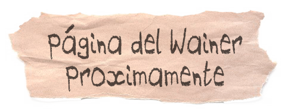

La influencia del Wainer
Tanto el Wainer como la historia del juego parten de la misma idea: un espacio abandonado que encuentra una nueva vida a través de la organización colectiva. Un lugar construido para que otras personas puedan desarrollar proyectos y encontrarse.
De alguna manera, todo este proyecto funciona como un collage de voces, experiencias y formas de entender la resistencia cultural desde la práctica cotidiana.
Ubicado en una esquina de Calzada, entre árboles, colores e historias acumuladas en sus paredes, el Wainer es un espacio en constante transformación. Talleres, fechas musicales, encuentros y propuestas de todo tipo conviven bajo una misma idea: demostrar que otra forma de hacer cultura es posible cuando se construye colectivamente y se sostiene desde la autogestión.